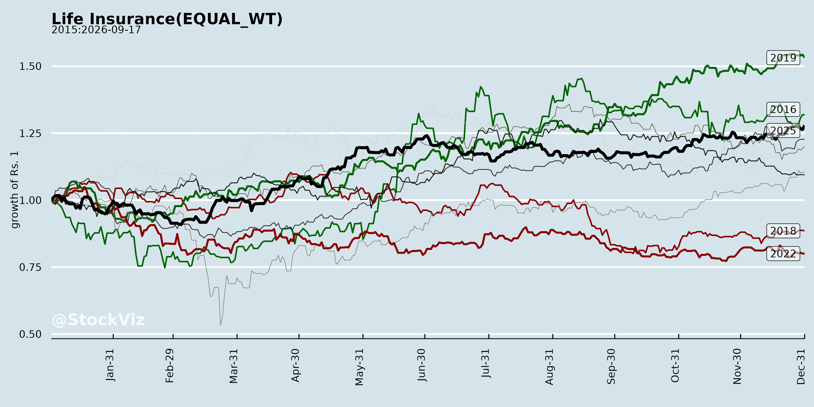
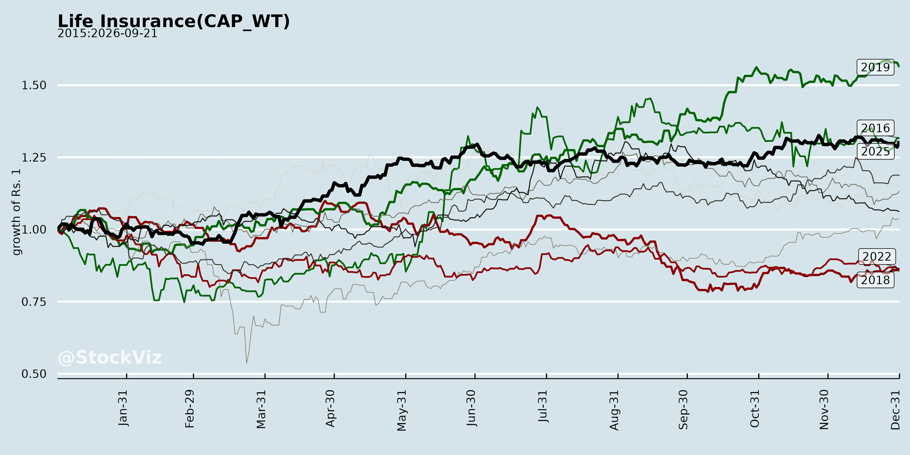
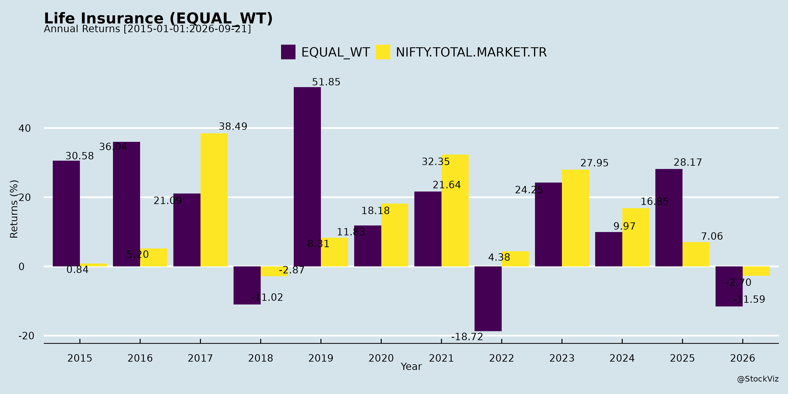
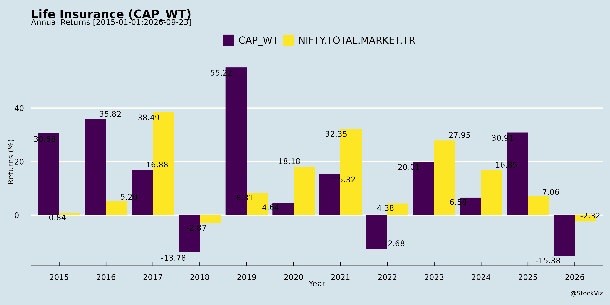
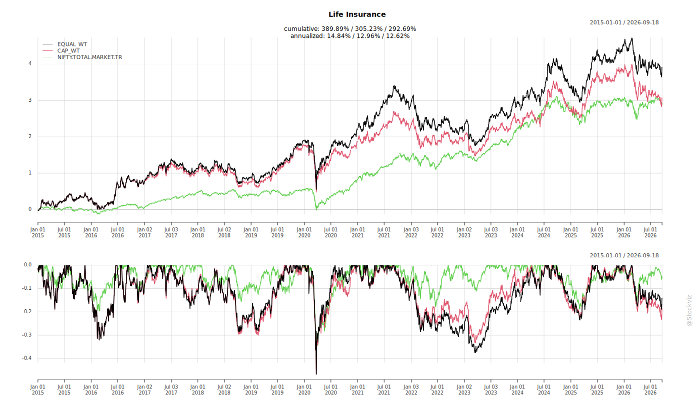
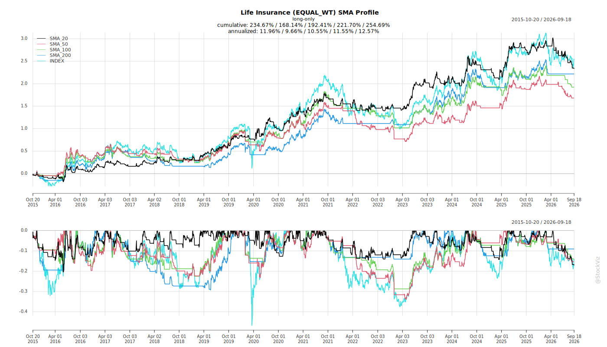
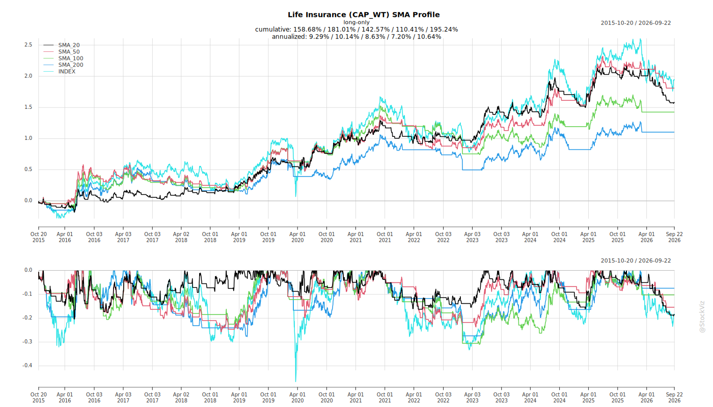
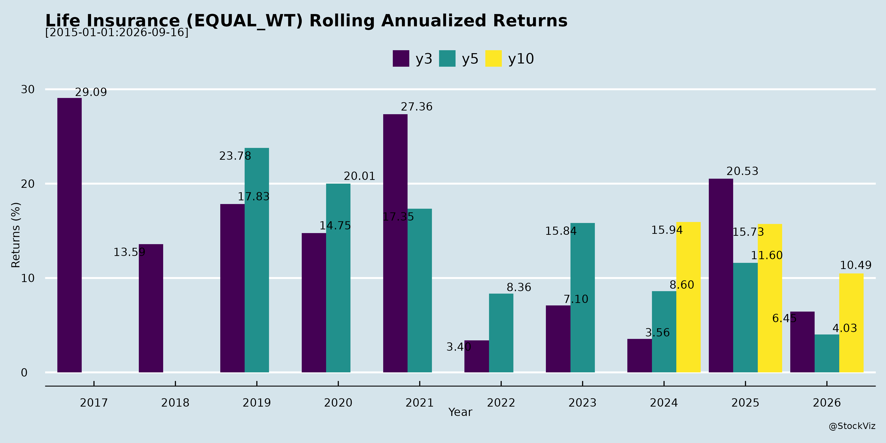
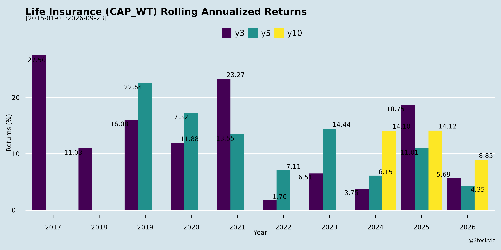

Annual Returns




Cumulative Returns and Drawdowns

SMA Scenarios


Current Distance from SMA
Rolling Returns


EBIT (% of Industry Total)
Revenue (% of Industry Total)
AI Summaries
Analyst
asof: 2025-11-27
Summary Analysis of Indian Life Insurance Sector
Based on the provided disclosures (primarily investor/analyst meet schedules from Canara HSBC Life, HDFC Life, ICICI Prudential, LIC, Max Financial Services/Axis Max Life, and SBI Life, with detailed insights from Max Financial’s Q2 & H1 FY26 earnings transcript), the Indian life insurance sector shows robust momentum amid regulatory shifts. Private players (e.g., Axis Max Life) are outperforming the industry/LIC on growth and market share, driven by product innovation and distribution. Below is a structured analysis of headwinds, tailwinds, growth prospects, and key risks.
Tailwinds
- GST Rate Reductions Enhancing Affordability: Recent GST changes (post-Sept 22, 2025) have lowered premiums, boosting demand (e.g., early traction in protection at Axis Max Life). Full benefits passed to customers, supporting medium-term volume growth.
- Strong Premium Growth & Market Share Gains: Private sector outpacing industry (e.g., Axis Max Life: 18% H1 FY26 individual adjusted FYP growth vs. private 8%/industry 2%; private market share up 83 bps to 10.1%). 2-year CAGR at 24% (vs. industry 11%).
- Favorable Product Mix & Segment Momentum:
- Protection/Health: 34-36% growth, highest market share; 37% rider attachment.
- Annuities: 85% H1/122% Q2 growth.
- Balanced retail mix (e.g., non-par 28%, ULIP 37%, protection/health 13%).
- Digital & Operational Efficiencies: Rapid app scaling (4L+ installs), AI tools (e.g., cross-sell engine, underwriting), high NPS (71-77 for digital). 90% adoption of platforms like mSpace/Sales Navigator.
- Customer Metrics: Industry-leading persistency (83% 13-month), NPS up to 57; low grievance rates.
- Active Investor Engagement: Multiple conferences/meets (e.g., JM Financial, Macquarie, UBS, Avendus) signal confidence.
Headwinds
- GST Input Tax Credit (ITC) Disallowance: Short-term margin hit (300-350 bps run-rate if unmitigated; ~60 bps in H1, INR268 Cr one-time EV impact). Affects renewal commissions more in retail-heavy books; ~75% Sept sales impacted.
- Margin Pressure from Regulatory/Ind AS Changes: Fair value changes and GST reduced PAT (e.g., Axis Max Life PAT down to INR149 Cr from INR231 Cr). Opex/GWP at 15.5% (up 11% YoY).
- Muted Bancassurance Growth: Key partner like Axis Bank at 7% (despite 65-70% counter-share); overall partnerships at 10% vs. proprietary 22%.
- Base Effect & Seasonality: Tough H2 base; ULIP mix adjustments (down from 60%+ in some channels).
Growth Prospects
- High Single-Digit to Mid-Teens Guidance: Axis Max Life maintains 15-17% APE growth (outpacing industry/private by 300-500 bps); VNB margins at 24-25% (up from 23.6% Q2 FY25). 25% individual new business sum assured growth (#3 rank).
- Channel Expansion:
- Proprietary: 39% 3-yr CAGR (agency to 1.42L, 150+ branches); online 68% CAGR.
- Partnerships: 31 new partners H1; new banks at 111% growth, >25% counter-share.
- NRI/GIFT City office for 13% sales contribution.
- Group Credit Life: 24% Q2 growth.
- Underpenetrated Segments: Protection (underpenetrated, post-GST acceleration), annuities (IRIS survey shows rising retirement needs), low industry penetration (~4%).
- Long-Term Vision: Aim for #3 private player; EV at INR26,895 Cr (+15% YoY); solvency 208%; AUM +9% to INR1.85L Cr. ROEV 16.3% (target 18-19% medium-term).
- Sector-Wide: Frequent meets suggest sustained capex/investor interest; LIC audio call dissemination indicates transparency.
Key Risks
- Execution on Margin Recovery: Offset GST via distributor renegotiations, cost optimization, product tweaks (e.g., ULIP/par structurally impacted). No timelines disclosed; vendor/opex dependencies.
- Distribution Dependencies: Bancassurance (54% mix) vulnerable to partner dynamics (e.g., Axis at 40-70% reliance); competition from peers (e.g., Redeye comments on cost structures).
- Regulatory/External Shocks: Yield curve movements, Ind AS volatility (e.g., negative non-op variance); potential persistency/rider assumption misses in EV calcs.
- Product/Channel Imbalances: ULIP reduction headroom limited; protection sales longer-cycle in partnerships vs. proprietary.
- Macro Sensitivities: Interest rates (unwind impact on ROEV); equity/yield volatility; lower-tier city penetration challenges.
- Competition & Scale: Industry growth at 2% H1; privates must sustain outperformance amid 31+ new partners crowding.
Overall Outlook: Positive with strong tailwinds from GST/product demand offsetting headwinds. Privates like Axis Max Life poised for 15%+ growth and margin stability (24-25%), targeting sustainable value via digital/customer focus. Sector risks manageable via execution, but monitor GST offsets and bancassurance in H2 FY26.
General
asof: 2025-11-27
Summary Analysis: Indian Life Insurance Sector (Based on Provided Announcements)
Tailwinds (Positive Factors)
- Capital Strengthening Initiatives: ICICI Prudential’s approval for ₹12 Bn NCD issuance (subordinated debt, 10-year tenure with call option) signals proactive capital management to bolster solvency margins and support expansion. This aligns with IRDAI’s focus on robust capital structures amid growth.
- Employee Incentives and Retention: HDFC Life’s allotment of 759,628 equity shares under ESOPs reflects confidence in future performance, aiding talent retention in a competitive sector.
- Sector Resilience: Routine disclosures indicate operational continuity and compliance with listing norms, underscoring stability despite regulatory noise.
Headwinds (Negative Factors)
- Regulatory and Tax Scrutiny: SBI Life’s GST demand order (₹68.77 Cr total, incl. ₹62.31 Cr tax + ₹6.46 Cr penalty + interest for FY19-24) highlights ongoing disputes over GST on ULIPs, ITC reversals, and GSTR mismatches. This could pressure cash flows across peers, as similar issues plague the sector (e.g., non-reversal of ITC on credit notes).
- Litigation Costs: SBI Life plans to appeal, but such cases (under CGST/MPGST Acts) may lead to prolonged legal battles, diverting management focus.
Growth Prospects
- Moderate to Strong: Capital raises like ICICI’s suggest funding for product innovation, distribution expansion, and digital transformation. India’s life insurance penetration (~3.2% of GDP) offers 15-20% CAGR potential (per IRDAI trends), driven by rising incomes, awareness, and bancassurance. ESOP activity implies internal optimism for VNB/profit growth.
- Near-Term Catalysts: NCD listing on NSE could lower funding costs; successful ESOP exercises dilute equity minimally (HDFC’s post-allotment capital: ₹2.16 Bn shares).
Key Risks
- Regulatory/Tax Risks (High): Escalating GST demands (ULIP taxation contentious since 2017); potential for sector-wide audits/IRDAI interventions.
- Financial Impact (Medium): Cash outflows for penalties/interest (~₹69 Cr for SBI); dilution from ESOPs/ESOS (minor at <0.4% for HDFC).
- Operational/Legal Risks (Medium): Appeals could tie up funds; broader applicability to peers (e.g., HDFC/ICICI/LIC) if precedents set.
- Macro Risks (Low in Docs): No direct mention, but inferred solvency pressure if growth outpaces capital.
Overall Outlook: Mildly positive with capital tailwinds offsetting tax headwinds. Sector growth intact (10-15% premium growth expected), but monitor GST appeals for contagion. No material insights from garbled LIC file.
Investor
asof: 2025-11-27
Summary Analysis of Indian Life Insurance Sector
Based on the provided disclosures (investor/analyst meet schedules from Canara HSBC Life, HDFC Life, ICICI Prudential, SBI Life; LIC’s conference call recording; and Max Financial Services’ detailed Q2/H1 FY26 earnings transcript for Axis Max Life), the sector shows robust momentum amid regulatory shifts. Private players (e.g., Axis Max Life, HDFC Life) are outperforming the industry (H1 FY26 individual adjusted FYP: private +8%, industry +2%), driven by premium growth, channel expansion, and digital focus. Below is a structured analysis of headwinds, tailwinds, growth prospects, and key risks.
Tailwinds
- Strong Premium Growth & Market Share Gains: Axis Max Life reported 18% H1 FY26 individual adjusted FYP growth (vs. private sector 8%, industry 2%), with 2-year CAGR at 24%. Protection (+34-36%), annuities (+85% H1), and group credit life (+24% Q2) led gains. Private peers (e.g., HDFC, ICICI) actively engaging investors signal confidence.
- Product Mix Optimization: Shift toward high-margin products (protection/health 13% of sales, +36%; non-par savings). Margins expanded (VNB: 23.3% H1 FY26 vs. 20.2% prior; Q2 25.5% vs. 23.6%).
- Channel Strength: Proprietary channels (agency, online) at 39% 3-year CAGR; partnerships (bancassurance, brokers) scaling (10% Q2 APE growth, 25%+ counter-share in new banks). Axis Bank channel at 7% but poised for acceleration.
- Customer & Digital Metrics: Industry-leading persistency (13-month 83%, 25-month 76%); NPS up to 57. Digital apps (4L+ installs), AI tools (e.g., cross-sell engine, underwriting automation), and GST-compliant platforms enhance efficiency.
- Regulatory Affordability Boost: Recent GST cuts passed to customers, spurring protection demand (post-Sep 22 traction visible).
Headwinds
- GST ITC Disallowance: Major short-term drag (Axis Max: 300-350 bps run-rate margin hit; ~60 bps in H1, INR268 Cr on EV). Affects renewals/commissions more in retail-heavy books. Offset via distributor negotiations, cost cuts (opex/GWP 15.5%, +11% YoY), but 1-2 quarters needed.
- Profit Volatility: Consolidated PAT dips (e.g., Max Financial INR92 Cr, down due to IndAS fair value changes + GST). Embedded value +15% YoY but one-time GST drag.
- High Base & Execution Intensity: 2-year CAGR 24% on tough base; opex investments (branches, agents: 61K to 142K) limit near-term leverage.
- Distribution Costs: Regulator-capped expenses of management, but bancassurance push raises scrutiny (e.g., media on “high-cost” industry).
Growth Prospects
- Market Opportunity: Low penetration (~4%) offers 10-15%+ industry growth; privates target 300-500 bps outperformance (Axis Max aims for “breakout #3” player).
- High-Growth Segments: Protection (highest market share), annuities (122% Q2), NRI (13% sales, GIFT City office), group credit life. Retail sum assured +25% (INR2.16L Cr, #3 rank).
- Channel/Mix Expansion: 31 new partners H1; proprietary to 46% mix; digital (68% CAGR online). H2 upside from benign base, GST tailwinds.
- Guidance Stability: Axis Max maintains 15-17% APE growth, 24-25% VNB margins (post-offsets); ROEV 16-19%.
- Investor Engagement: Widespread meets (e.g., JM Financial, Macquarie, UBS, Avendus) indicate sustained capital access.
Key Risks
| Margin Compression |
GST (300-350 bps), yield curve shifts, non-operating EV variances (-INR9 Cr). |
Product tweaks, distributor renegotiations, cost optimization (11% opex growth <18% GWP). |
| Regulatory/Policy |
ITC denial, future GST/EMD changes; no UPSI in meets but scrutiny high. |
Compliance focus; presentations public. |
| Execution/Competition |
Bancassurance counter-share erosion (Axis 65-70%); ULIP mix down but volatile. |
90% digital adoption (mSpace), AI sales tools; balanced mix (ULIP 37%). |
| Macro/Operational |
Interest rates (unwind impact on ROEV), persistency/claims; attrition. |
High persistency/NPS; GenAI HR (51% engagement, lower attrition). |
| Accounting/Volatility |
IndAS MTM hits P&L; EV sensitivities. |
Solvency 208%; AUM +9% (INR1.85L Cr). |
Overall Outlook: Bullish medium-term (FY26 growth 15%+, margins stable at 24-25%) despite GST hiccup, with privates leveraging digital/product innovation for 10.1%+ share. Sector resilience evident in outperformance vs. industry; monitor H2 offsets and protection traction. Risks are manageable via execution, but GST resolution critical.
Meeting
asof: 2025-11-27
Summary Analysis of Indian Life Insurance Sector (Q2 FY26 Insights from Canara HSBC, HDFC Life, LIC, SBI Life)
Based on the Q2 FY26 (H1 FY26) unaudited/audited financial results of key listed players (Canara HSBC Life, HDFC Life, LIC, SBI Life), the sector exhibits robust premium growth amid investment volatility and regulatory tailwinds. Below is a structured analysis of headwinds, tailwinds, growth prospects, and key risks.
Tailwinds (Positive Drivers)
- Premium Momentum: Strong YoY growth in First Year Premium (FYP: +14-114% across peers; e.g., Canara HSBC +14%, HDFC +10%, LIC -3% but Single Premium +14%, SBI +10%). Renewal premiums stable/growing (e.g., HDFC +18%, SBI +21%). Overall Net Premium Income up 20-25% YoY (LIC +5%, others higher), driven by individual non-par and protection products.
- Healthy Solvency: All peers above regulatory minimum (150%); LIC 198-213%, HDFC 175-192%, SBI 194%, Canara 198%. Indicates strong capital buffers.
- Investment Yields: Gross yields 7-9% (without unrealized gains); e.g., LIC 8.9%, SBI 8.2%, HDFC 7.8%. Shareholder yields resilient (6-8%).
- Persistency Improvement: 13th-month persistency >80% for most (HDFC 85%, SBI 87%, Canara 84%). Conservation ratios strong (85-90% in non-par life).
- Regulatory Support: IRDAI’s solvency focus and product flexibility aiding growth; recent listings (Canara HSBC) unlock capital access.
Headwinds (Challenges)
- Investment Volatility: Unrealized losses hit policyholder accounts (e.g., HDFC -5.6% yield with gains, SBI negative in Q2 due to equity dips). Canara noted lower equity returns.
- Actuarial Strain: Sharp rise in actuarial liabilities (e.g., HDFC +2.4L Cr H1, SBI +32L Cr, LIC +2L Cr), leading to policyholder deficits offset by shareholder transfers.
- Expense Pressures: Expenses of Management (EOM) ratios elevated (HDFC 21.5%, Canara 19%, LIC 11-12%, SBI 11%). Commission growth outpacing premiums in some cases.
- Marginal Persistency Declines: Some softening (e.g., Canara 13th-month 82-84%, HDFC 80-85%); longer-term (61st month) <60% signals lapse risks.
- Lower Surplus Transfer: Policyholder surplus to shareholders dipped YoY (e.g., HDFC flat, LIC stable but lower than FY25).
Growth Prospects
- Volume Expansion: H1 APE (Annualized Premium Equivalent) up 15-30%; non-par individual (term/protection) driving 40-50% FYP mix. SBI/HDFC single premiums +24%/14%.
- VNB Margins: Healthy Value of New Business (VNB; e.g., HDFC implied strong via profits, SBI EV +27.5B). 13-25% margins sustainable with mix shift to high-margin products.
- Digital/Agency Leverage: High persistency in non-par (87-90%) and bancassurance tie-ups (SBI, HDFC via HDFC Bank).
- Market Share Gains: Private players (HDFC/SBI ~15-20% each) gaining on LIC (60%+); urban penetration and underserved rural/group segments untapped (India’s insurance penetration ~4%).
- Capital Infusion: Recent IPOs (Canara HSBC) and strong PAT (SBI +4% YoY H1 to 109B, HDFC 99B, LIC 21B) support expansion. Projected 15-20% sector CAGR to FY28.
Key Risks
| Market/Investment |
Equity/bond volatility; unrealized losses erode yields (e.g., Q2 dips). |
HDFC/SBI yields swing 5-20%; sensitivity: 10bps rate rise cuts EV 2-4%. |
| Regulatory |
IRDAI caps on expenses, solvency hikes, product approvals. |
EOM limits binding; Sahara Life transfer pending (SBI risk). |
| Operational |
Lapses/mortality/morbidity deviations. |
Persistency <70% long-term; NPA ~0.1% low but monitored. |
| Credit |
Debt downgrades (e.g., Canara NPAs 0.1-5.6%). |
Provisioning up (LIC minor); IL&FS legacy noted. |
| Competition |
25+ players; bancassurance dominance. |
Margin pressure if mix shifts to low-margin group (20-30% premiums). |
| Macro |
Inflation, rates, slowdown. |
Actuarial assumptions sensitive (e.g., LIC amortizing pension liabilities). |
Overall Outlook: Sector resilient with 15-20% growth potential (driven by underpenetration), but Q3FY26 watch: monsoons, elections (if any), rates. Private peers (SBI/HDFC) outpacing LIC on efficiency; EV reporting (SBI) signals maturity. PAT growth 5-15% H1 supports dividends/ESOPs. Recommendation: Positive; focus on non-par, digital for 20%+ VNB CAGR.
Press Release
asof: 2025-11-27
Analysis of Indian Life Insurance Sector (H1 FY26 Insights)
Based on H1 FY26 (ended Sep 30, 2025) financial updates from key players—Canara HSBC Life (post-listing debut), LIC (market leader), Axis Max Life (Max Financial), and SBI Life (private leader)—the sector demonstrates resilience amid regulatory tailwinds and diversification efforts. Aggregate trends show total premium growth of 5-25% YoY, VNB growth of 12-27%, PAT up 4-16%, and improving margins/persistency. Private players gained share (e.g., SBI Life at 22.6% private IRP; Axis Max at 10.1%), while LIC held 59% overall FYPI share. Below is a structured summary of headwinds, tailwinds, growth prospects, and key risks.
Tailwinds (Positive Drivers)
- Regulatory Boost: GST exemption on individual premiums (Sep 2025) hailed across reports (LIC, SBI Life, Canara HSBC) as enhancing affordability, penetration, and first-time buyer access. Passed on fully to customers.
- VNB & Margin Expansion: Strong profitability—LIC (+12.3% VNB to ₹5,111 Cr, margin +140 bps to 17.6%); Axis Max (+27% to ₹974 Cr, margin +210 bps to 23.3%); SBI Life (+14% to ₹27.5 Bn, 27.8% margin); Canara HSBC (+20.6% to ₹214 Cr, 19.6% margin). Driven by Non-Par shift (LIC Non-Par APE share to 36.3%; SBI Life product mix diversification).
- Premium Momentum: Renewal premiums robust (LIC +6.14%, SBI Life +21%, Axis Max +18%, Canara HSBC +28.8%). Total premiums: LIC +5.1%, SBI Life +19%, Axis Max +18%, Canara HSBC +24.9%.
- Efficiency Gains: Expense ratios improved (LIC -146 bps to 11.28%; Canara HSBC 19% vs. 20.5%; SBI Life total cost 10.9%). Persistency stable/improving (SBI Life 13m +70 bps to 87.1%; Canara HSBC 84.4%; LIC 75.3%).
- Bancassurance & Diversification: Backbone for growth (SBI Life 57% APE; Canara HSBC emphasis). Agency/digital ramps (LIC Banca/alternate +68%; Axis Max 31 new partners).
- AUM/Solvency Strength: AUM growth 3-11% (LIC ₹57.23 lakh Cr); solvency >190% (SBI 194%, Axis Max 208%, Canara 198%, LIC 213%).
Headwinds (Challenges)
- Volume Pressure in Individual New Business: Policies down sharply at LIC (-20.8% to 72.6L); SBI Life shifted to higher-value (sum assured +99%). Single premium reliance (SBI +24%) amid surrender regs.
- EV Fluctuations: LIC EV -1% to ₹8.13 lakh Cr; moderated RoEV (Axis Max -50 bps).
- Investment Yields: LIC yield down to 8.9% (from 9.02%); equity/debt sensitivity risks.
- Persistency Dips: LIC 13m premium basis -230 bps to 75.3%; policy basis -390 bps to 63.4%.
- Macro/Competition: Slower APE growth (LIC +3.6%, SBI +10%); private peers outpacing LIC in Non-Par/APE (SBI leadership).
Growth Prospects
- High Industry Potential: Underpenetrated market (life insurance ~3% GDP vs. peers 4-7%); 9% CAGR premiums (Swiss Re). Target: Insurance for All by 2047. Protection/Annuity tailwinds (SBI +29-33%; Axis Max retail protection lead).
- Private Sector Acceleration: Market share gains (SBI 22.6% IRP; Axis Max +83 bps to 10.1%; Canara diversification post-listing). Non-Par/Protection focus (LIC Non-Par +30%, 36% share).
- Channel/Product Mix Evolution: Banca (51-57% industry/private) + agency/digital (LIC alternate +68%; SBI others +36%). Group premium growth (LIC +6.7%).
- Scale & Tech: AUM CAGR 10%+; digital (SBI 99.6% sourcing; RPA/GenAI). Listings (Canara, LIC) boost governance/transparency.
- Projections: VNB margins 17-28%; PAT 4-16% growth; AUM ₹50-60 lakh Cr+ by FY26-end, fueled by GST/rising incomes.
Key Risks
- Regulatory/Tax Changes: GST 2.0 impacts (SBI VoNB sensitivity -ve); surrender value/tax norms (ULIP/Non-ULIP curbs); IRDAI persistency reporting.
- Persistency/Lapses: Sensitivity: +10% lapses -4.6% VoNB (SBI); mass ULIP lapses -8-18%.
- Investment/Market Volatility: Equity -10% → -2.4% EV (SBI); rate ±100 bps → ±3-4% EV. Yield compression.
- Operational: Expense creep (SBI opex +40 bps); mortality +10% → -6% VoNB. Cyber/data breaches (mitigated via ISO certs).
- Competition/Macro: Intense private rivalry; economic slowdowns (e.g., LIC Ind NBP -3.5%); climate/inflation risks.
- Sector-Specific: Protection gap; over-reliance on single premium/banca (industry 33%).
Overall Outlook: Positive. Tailwinds from GST/reforms outweigh headwinds, positioning sector for 10-15%+ growth. Private players lead profitability/diversification; LIC anchors scale. Risks manageable via strong solvency (avg >200%) and digital focus. Monitor persistency and yields for sustained momentum.
Copyright © 2023 SAS Data Analytics Pvt. Ltd. All rights reserved.
🐞